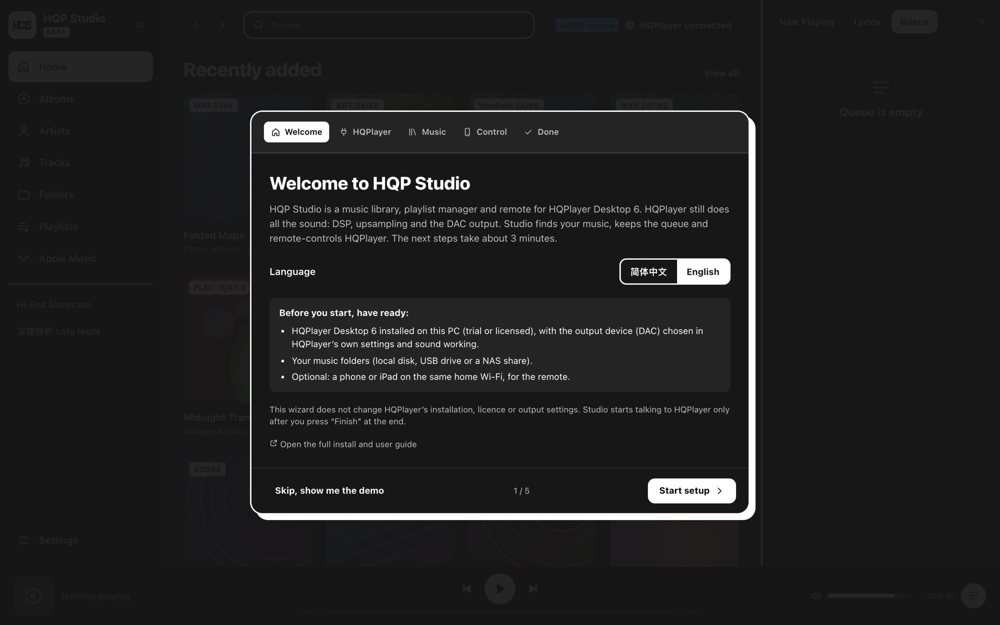
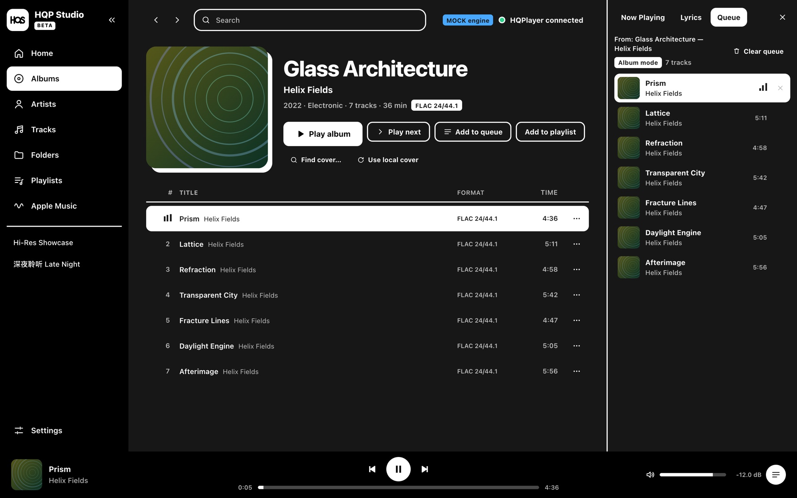

What you need你需要准备什么
| PC | Windows 10 or 11, 64-bit |
| HQPlayer | HQPlayer Desktop 6 (trial or licensed) on the same PC |
| Music | Folders on a local disk, USB drive or NAS share — FLAC, WAV, DSF, DFF, ALAC, MP3 and anything else HQPlayer plays |
| Remote (optional) | A phone or iPad on the same home Wi-Fi; it uses the browser, no app to install |
Studio does not include or install HQPlayer. Get it from Signalyst: signalyst.com/consumer.html.
| 电脑 | Windows 10 或 11，64 位 |
| HQPlayer | HQPlayer Desktop 6（试用版或已授权），装在同一台电脑上 |
| 音乐 | 本地硬盘、USB 盘或 NAS 共享上的音乐文件夹 —— FLAC、WAV、DSF、DFF、ALAC、MP3 等 HQPlayer 能播放的格式 |
| 手机遥控（可选） | 和电脑连着同一个家庭 Wi-Fi 的手机或 iPad，用浏览器即可，不需要装 App |
Studio 不包含、不安装、也不破解 HQPlayer。HQPlayer 请从 Signalyst 官网下载：signalyst.com/consumer.html。
First: make HQPlayer play on its own第一步：先让 HQPlayer 自己能出声
- Install and open HQPlayer Desktop 6.
- In HQPlayer's Settings, choose your DAC as the output (backend / device, e.g. its ASIO driver) and your usual mode, filter and rate (e.g. DSD512). Studio leaves these alone unless you allow it to change DSP settings.
- To use Studio's volume control, untick Fixed volume under Outputs in HQPlayer's settings. Otherwise Studio can only show the volume.
- Play any song in HQPlayer and check that you hear it.
- 安装并打开 HQPlayer Desktop 6。
- 在 HQPlayer 的 设置（Settings） 里选好输出（Backend / Device，例如你 DAC 的 ASIO 驱动），以及常用的模式、滤波器和采样率（例如 DSD512）。除非你在 Studio 里明确允许，Studio 不会改这些设置。
- 想用 Studio 调音量：在 HQPlayer 设置的 Outputs 里取消勾选 “Fixed volume”，否则音量条只能显示、不能调。
- 在 HQPlayer 里播放任意一首歌，确认能听到声音。
Install HQP Studio第二步：安装 HQP Studio
Download from the download section. Pick one:
| File | Use |
|---|---|
…-setup-x64.exe |
Installer (recommended). Per-user, no admin rights, Start menu and desktop shortcut |
…-portable-x64.exe |
Portable: double-click to run, nothing installed |
…-win-x64.zip |
The unpacked app folder |
- Double-click
…-setup-x64.exe. - The program is not code-signed. If Windows says "Windows protected your PC", choose More info → Run anyway.
- Keep the suggested install folder (or change it).
- Leave "Run HQPlayer Studio" ticked on the last page and press Finish.
All three share the data folder %APPDATA%\HQPlayer Studio (library
index, playlists, settings, backups, logs). Updating, switching or uninstalling
keeps it.
在 下载区 下载，三选一：
| 文件 | 用途 |
|---|---|
…-setup-x64.exe |
安装版（推荐）。装到当前用户，不需要管理员权限，有开始菜单和桌面图标 |
…-portable-x64.exe |
免安装版：双击就运行，不安装任何东西 |
…-win-x64.zip |
解压即用的程序文件夹 |
- 双击
…-setup-x64.exe。 - 程序没有数字签名，Windows 可能弹出 “Windows 已保护你的电脑”：点 更多信息 → 仍要运行。
- 安装位置用默认的即可（也可以改）。
- 最后一页保持勾选“运行 HQPlayer Studio”，点 完成。
三种方式共用同一个数据文件夹
%APPDATA%\HQPlayer Studio（音乐库索引、播放列表、设置、备份、日志）。升级、换用、卸载都不会删除它。
The setup wizard第三步：设置向导

Five steps; everything can be changed later in Settings. To look around first, press Skip, show me the demo (a made-up demo library, HQPlayer untouched). Run it again any time from Settings → General → Setup wizard → Run setup again.
① Welcome
Choose the language: 简体中文 or English.
② HQPlayer — three checks
| Check / option | What it means | Recommended |
|---|---|---|
| HQPlayer Desktop found |
Studio looks in the usual places. If not found, press
Choose HQPlayer… and pick HQPlayer6Desktop.exe
|
must be ticked |
| HQPlayer is running | If not, press Start HQPlayer | must be ticked |
| Control interface answers (127.0.0.1:4321) | Studio connects to HQPlayer's control port and disconnects, sending no command. HQPlayer needs a few seconds after starting: press Check again | must be ticked |
| Start HQPlayer when Studio starts | Studio opens HQPlayer if it is not running yet | on |
| HQPlayer window: normal / minimized / hidden | A hidden HQPlayer keeps playing; bring it back from Settings → Playback & engine capabilities → HQPlayer program → Show | "hidden" once you're used to it |
Control interface doesn't answer? Make sure HQPlayer is actually open → quit it completely and reopen → wait a few seconds and press "Check again" → make sure no other program (e.g. another HQPlayer remote) uses port 4321 → allow HQPlayer if security software asks.
③ Music folders
- Add music folder… as many times as you like. Scanning starts right away and continues in the background.
-
NAS: use the network path, e.g.
\\NAS\Music, rather than a mapped drive letter. - Scans only read: nothing is moved, renamed, deleted or retagged. New music is picked up automatically later.
- Tick Remove the demo library once you've added your own folder.
④ Connection and control
| Option | What it means | Recommended |
|---|---|---|
| Real HQPlayer / demo mode | Real = HQPlayer on this PC; demo = mock engine, no sound | Real HQPlayer |
| Allow Studio to control HQPlayer | Play, pause, skip, volume, send albums and playlists to HQPlayer. Off = Studio only shows what HQPlayer does | on |
| Allow Studio to change HQPlayer DSP settings | Mode, filters, modulator, output rate, invert, adaptive volume and presets from Studio. A change while playing causes a short gap (~5 s) | off if unsure |
⑤ Done
Check the summary and press Finish and restart Studio. Afterwards the top bar should say HQPlayer connected.
一共 5 步，每一项都可以以后在“设置”里改。想先看看界面，可以点 跳过，先看演示（虚构的演示音乐库，不会碰 HQPlayer）。随时可以在 设置 → 常规 → 设置向导 → 重新运行设置向导 再来一次。
① 欢迎
选择语言：简体中文 / English。
② HQPlayer（三项检查）
| 检查 / 选项 | 说明 | 建议 |
|---|---|---|
| 找到了 HQPlayer Desktop |
Studio 会在常见位置查找。找不到时点 选择 HQPlayer… 选
HQPlayer6Desktop.exe
|
必须打勾 |
| HQPlayer 正在运行 | 没运行就点 启动 HQPlayer | 必须打勾 |
| 控制接口有回应（127.0.0.1:4321） | Studio 连一下 HQPlayer 的控制端口再断开，不发任何命令。HQPlayer 刚启动要几秒，点 再检查一次 | 必须打勾 |
| 启动 Studio 时自动启动 HQPlayer | 打开 Studio 时如果 HQPlayer 没运行，就替你打开 | 推荐开 |
| HQPlayer 窗口：正常 / 最小化 / 隐藏 | “隐藏”后 HQPlayer 照常在后台播放，可在 设置 → 播放与引擎能力 → HQPlayer 程序 里点“显示 HQPlayer”找回来 | 熟悉后可选“隐藏” |
控制接口没回应？确认 HQPlayer 真的开着 → 完全退出 HQPlayer 再打开 → 等几秒点“再检查一次”→ 确认没有别的程序（例如另一个 HQPlayer 遥控软件）占用 4321 端口 → 安全软件询问时允许 HQPlayer。
③ 音乐文件夹
- 点 添加音乐文件夹…，可以添加多个。添加后立即开始扫描，并在后台继续。
-
NAS：用网络路径，例如
\\NAS\Music，比映射盘符更可靠。 - 扫描只读文件，从不移动、改名、删除或改标签。以后新增的音乐会被自动发现。
- 添加了自己的文件夹后，勾选 删除演示音乐库。
④ 连接与控制
| 选项 | 说明 | 建议 |
|---|---|---|
| 真实 HQPlayer / 演示模式 | 真实 = 连接本机 HQPlayer；演示 = 模拟引擎，没有声音 | 真实 HQPlayer |
| 允许 Studio 控制 HQPlayer | 播放、暂停、切歌、调音量、把专辑和播放列表送进 HQPlayer。关掉时 Studio 只显示 HQPlayer 的状态 | 开 |
| 允许 Studio 修改 HQPlayer DSP 设置 | 在 Studio 里切换模式、滤波器、调制器、输出采样率、反相、自适应音量并保存预设。播放中更改会有约 5 秒的短暂中断 | 不确定就先关 |
⑤ 完成
检查摘要，点 完成并重新启动 Studio。重启后右上角应显示 “HQPlayer 已连接”。
Everyday use日常使用

- Play: double-click an album, track or playlist, or use the play button on a cover. Studio stops HQPlayer, loads the tracks into it and starts playback.
- Queue: the right-hand panel (toggle it with the button at the right of the player bar). Play next, add to queue, drag to reorder. Playing never changes a saved playlist.
- Out of sync: if someone changes tracks in HQPlayer's own window, choose Follow HQPlayer or Replace HQPlayer's queue. Nothing is overwritten silently.
- Playlists: create them under Playlists; add albums or tracks with right-click or "…".
- Search: the box at the top, or Ctrl + K / /.
- Keys: Space play / pause; Ctrl + → / ← next / previous.
- Mini Player: the button on the player bar; optionally always on top.
- Media keys, tray, themes: Settings → General.
- 播放：双击专辑、歌曲或播放列表，或点封面上的播放按钮。Studio 先停止 HQPlayer，再把曲目放进去并开始播放。
- 队列：右侧面板（播放条右边的按钮可以打开 / 收起）。可以“下一首播放”“加入队列”、拖动排序。播放不会改动保存的播放列表。
- 队列不一致：如果有人在 HQPlayer 自己的窗口里换了歌，选择 以 HQPlayer 为准 或 用 Studio 队列替换 HQPlayer。Studio 从不静默覆盖。
- 播放列表：在侧栏“播放列表”新建；在专辑 / 歌曲上右键或点“…”加入。
- 搜索：顶部搜索框，或按 Ctrl + K / /。
- 快捷键：空格 播放 / 暂停；Ctrl + → / ← 下一首 / 上一首。
- 迷你播放器：播放条上的按钮，小窗可置顶。
- 媒体键、托盘、主题：设置 → 常规。
Phone and tablet remote手机 / iPad 遥控
- On the PC: Settings → Web Remote → turn on Allow phones and tablets on the LAN → choose your home network.
- The first time, Windows may show a security alert: tick only "Private networks" and allow access. If the phone can't open the page, check in Windows Settings → Network & internet that this network is "Private".
- Press Create pairing code: scan the QR code with the phone, or open the shown address and type the 6-digit code.
- "Add to Home Screen" makes it feel like an app.
- 电脑上：设置 → 网页遥控 → 打开 允许局域网内的手机/平板访问 → 选择你家的网络。
- 第一次 Windows 可能弹出安全警报：只勾选“专用网络”，点“允许访问”。如果手机打不开页面，在 Windows 设置 → 网络和 Internet 里确认这个网络是“专用”。
- 点 生成配对码：手机扫二维码，或打开页面上显示的地址并输入 6 位配对码。
- “添加到主屏幕”后用起来就像 App。
The remote uses plain HTTP inside your home network. Only turn it on for a network you trust and never forward the port to the internet. Phones never get settings, diagnostics, folder management or file paths; unpair devices any time.
网页遥控在家庭网络里使用不加密的 HTTP。只在你信任的网络里打开，不要把端口映射到公网。手机永远拿不到设置、诊断、文件夹管理或文件路径；设备可以随时取消配对。
DSP settings and presetsDSP 设置与预设
With Allow Studio to change HQPlayer DSP settings on (in the wizard or Settings → DSP) you can change mode (PCM / SDM), 1x / Nx filters, modulator / noise shaping, output rate, invert and adaptive volume. Every change is read back from HQPlayer; while playing there's a short gap and it applies after about 5 seconds.
Presets: Save current settings as preset…, name it (e.g. "DSD512 night") and Apply it later to switch everything at once. If HQPlayer no longer offers an item of the preset, Studio names it and changes nothing.
Output device, buffers, convolution, matrix and CUDA stay in HQPlayer's own settings.
打开 允许 Studio 修改 HQPlayer DSP 设置（在向导或 设置 → DSP）后，可以改模式（PCM / SDM）、1x / Nx 滤波器、调制器 / 噪声整形、输出采样率、反相和自适应音量。每次更改都会从 HQPlayer 读回确认；播放中更改会有短暂中断，约 5 秒后生效。
预设：点 把当前设置存为预设…，起个名字（例如“DSD512 夜间”），以后选中点 应用 一次切换全部。如果 HQPlayer 里已经没有预设中的某一项，Studio 会说明是哪一项，不会改动任何设置。
输出设备、缓冲、卷积、矩阵、CUDA 只能在 HQPlayer 自己的设置里改。
Equalizer (EQ)均衡器（EQ）
Studio turns your EQ curve into a filter file that HQPlayer plays through its own convolution engine — the sound is still processed entirely by HQPlayer. In Settings → EQ:
-
Shape the curve (peaks, shelves, low / high-pass, presets, or paste an AutoEQ
ParametricEQ.txt) and press Apply once, so the filter file exists. - One-time setup in HQPlayer: in the convolution section of HQPlayer's settings, choose the file shown on the page ("Copy path") as the impulse response for the left and right channels (gain 0 dB), tick convolution and press OK.
- With music playing, run the Listening check: a strong treble-cut test filter goes in briefly and Studio asks whether the music sounds muffled. Your EQ goes back as soon as you answer (or after 2 minutes).
- From then on just press Apply. Boosts automatically lower the preamp so the curve never exceeds 0 dB.
Studio 把你的 EQ 曲线写成一个滤波器文件，由 HQPlayer 自己的卷积引擎处理 —— 声音仍然全部由 HQPlayer 处理。在 设置 → EQ：
-
调好曲线（峰值、高低架、高低通、预设，或粘贴 AutoEQ 的
ParametricEQ.txt），点一次 应用，生成滤波器文件。 - 在 HQPlayer 里一次性设置：在 HQPlayer 设置的卷积（Convolution）部分，把页面上显示的文件（可点“复制路径”）设为左右声道的脉冲响应（增益 0 dB），勾选卷积并确定。
- 播放音乐，运行 试听检查：Studio 临时放入一个明显削减高音的测试滤波器，问你“音乐是不是变闷了”。回答后（或 2 分钟后）你的 EQ 自动恢复。
- 以后改曲线只需点“应用”。有提升时 Studio 会自动降低前级增益，曲线不会超过 0 dB。
Lyrics and covers歌词与封面
-
Local lyrics first: a
.lrcwith the song's name, or lyrics embedded in the file. Open the lyrics panel from the player bar; − / + adjusts the timing. - Online lyrics (LRCLIB, NetEase, Kugou, lyrics.ovh) are off until you enable them one by one in Settings → Lyrics; then only the playing track is looked up.
- Online covers (iTunes, Deezer, MusicBrainz) are off until enabled in Settings → Library → Covers. Local covers are never replaced.
-
优先使用本地歌词：与歌曲同名的
.lrc，或文件内嵌歌词。点播放条上的歌词按钮打开面板，用 − / + 校准时间。 - 在线歌词（LRCLIB、网易云、酷狗、lyrics.ovh）默认关闭，在 设置 → 歌词 逐个开启；开启后只为正在播放的那一首查询。
- 在线封面（iTunes、Deezer、MusicBrainz）默认关闭，在 设置 → 音乐库 → 封面 开启。已有的本地封面不会被替换。
Apple Music (experimental)Apple Music（实验功能）
Apple Music in the sidebar sends the Apple Music app's sound through HQPlayer. You need the Apple Music app for Windows, a virtual audio cable (e.g. VB-Audio's, installed by you) and HQPlayer's input set to that cable. Check this PC on that page lists what's missing and opens the right Windows settings.
It is not bit-perfect (the sound passes the Windows mixer) and is a few seconds behind the Apple Music app. Turn the amplifier down the first time.
侧栏的 Apple Music 让 Apple Music 应用的声音经过 HQPlayer。需要：Windows 版 Apple Music 应用、一个虚拟声卡（例如 VB-Audio 的虚拟线缆，需要自己安装），并在 HQPlayer 设置里把输入设为它。页面上的 检查这台电脑 会逐项告诉你缺什么，并打开对应的 Windows 设置。
这不是逐位精确播放（声音经过 Windows 混音器），并且比 Apple Music 应用晚几秒。第一次使用请先把放大器音量调低。
Backups, updates, uninstalling备份、升级、卸载
- Backups: Settings → General → Data backups. One a day and one before each update, automatically; Back up now any time. Restore… brings one back, and the current data is saved first so a restore can be undone. Backups hold the library index, playlists, queue and settings — not music files.
- Update: download the new version here and install it over the old one. Studio never updates itself.
- Going back: install the older version. If the newer one upgraded the database, the older one says so and offers to restore the pre-update backup.
-
Uninstall: Windows Settings → Apps → HQPlayer Studio → Uninstall.
%APPDATA%\HQPlayer Studiostays; delete it yourself if you're done with Studio. HQPlayer is not affected.
- 备份：设置 → 常规 → 数据备份。每天自动一份、每次升级前自动一份；也可以随时点 立即备份。恢复… 可选一份备份恢复，恢复前的数据也会先存一份，所以恢复可以撤销。备份只包括音乐库索引、播放列表、队列和设置，不包括音乐文件。
- 升级：在本站下载新版本，直接安装即可，不需要先卸载。Studio 不会自动更新自己。
- 退回旧版本：安装旧版本即可；如果数据库已被新版本升级，旧版本会提示并提供“恢复这个备份”。
-
卸载：Windows 设置 → 应用 → HQPlayer Studio → 卸载。数据文件夹
%APPDATA%\HQPlayer Studio会保留，确定不用后可手动删除。卸载 Studio 不影响 HQPlayer。
Troubleshooting常见问题
| Symptom | What to do |
|---|---|
| Top bar says "MOCK engine" | Still in demo mode: Settings → Playback & engine capabilities → Engine connection → Real HQPlayer → Restart now (or run the wizard again) |
| "HQPlayer not connected" | Open HQPlayer, or turn on "Start HQPlayer when Studio starts". Studio reconnects by itself and never starts playback on reconnect |
| Play buttons greyed out | Settings → Playback & engine capabilities → Allow Studio to control HQPlayer |
| Plays but no sound | That's HQPlayer's output: play a song in HQPlayer itself and check its output device / DAC |
| Volume slider doesn't move | HQPlayer Settings → Outputs → untick Fixed volume |
| Folder not scanned / NAS unavailable |
See the folder's error under Settings → Library; use \\NAS\share and
make sure File Explorer can open it
|
| Phone can't open the remote | Same Wi-Fi; network set to "Private"; allow "Private networks" in the firewall prompt; create a new code if it expired |
| HQPlayer window hidden | Settings → Playback & engine capabilities → HQPlayer program → Show HQPlayer |
| Something went wrong | Settings → Diagnostics → Copy diagnostics and send it to the developer. Paths, titles, computer and user names are removed |
| 现象 | 处理 |
|---|---|
| 顶栏显示 “MOCK 引擎” | 还在演示模式：设置 → 播放与引擎能力 → 引擎连接 → 真实 HQPlayer → 立即重启（或重新运行设置向导） |
| 显示“HQPlayer 未连接” | 打开 HQPlayer，或开启“启动 Studio 时自动启动 HQPlayer”。Studio 会自动重连，重连后不会自动播放 |
| 播放按钮是灰的 | 设置 → 播放与引擎能力 → 允许 Studio 控制 HQPlayer |
| 能播放但没有声音 | 是 HQPlayer 的输出问题：在 HQPlayer 里直接播放一首歌，检查输出设备 / DAC |
| 音量条不能拖 | HQPlayer 设置 → Outputs → 取消 Fixed volume |
| 文件夹扫描不到 / NAS 不可用 |
在 设置 → 音乐库 查看该文件夹的错误；NAS 用
\\NAS\共享名 路径，并确认资源管理器能打开
|
| 手机打不开遥控页面 | 同一个 Wi-Fi；网络设为“专用”；防火墙提示时允许“专用网络”；配对码过期就生成新的 |
| HQPlayer 窗口被隐藏了 | 设置 → 播放与引擎能力 → HQPlayer 程序 → 显示 HQPlayer |
| 出了问题 | 设置 → 诊断 → 复制诊断信息，发给开发者。内容已去掉路径、曲名、电脑名和用户名 |
Privacy隐私
Studio uploads nothing. Only the online lyrics / cover sources you enable receive track or album names — never paths. Logs, crash reports and diagnostics stay on your PC; sending them is your choice. More detail (the long listening test, going back a version) is in the full user guide.
Studio 不上传任何数据。只有你开启的在线歌词 / 封面来源会收到歌名或专辑名 —— 从不发送路径。日志、崩溃报告和诊断信息都留在你的电脑上，是否发给别人由你决定。更多细节（长时间播放测试、版本回退等）见 完整用户指南。